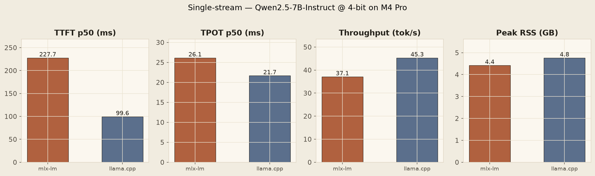
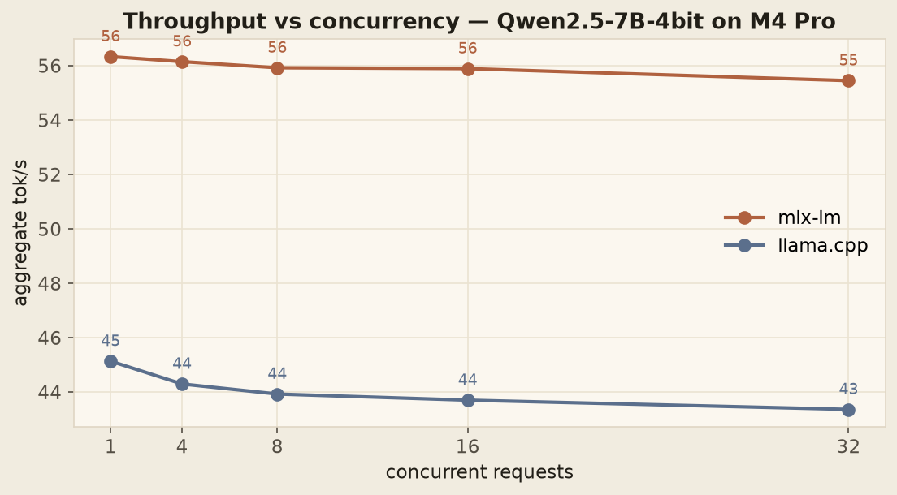
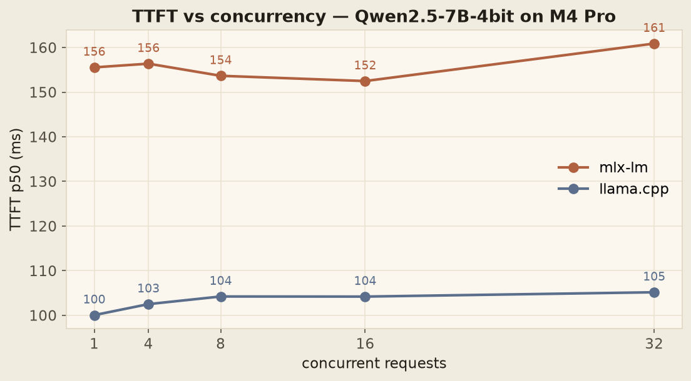

A MacBook Pro can serve an LLM. Then the second user arrives.
The question behind every “should we self-host?” conversation, answered with real numbers: mlx-lm vs llama.cpp on an M4 Pro — same model, same prompts, same fairness contract. This is the story of the flat line, and what’s underneath it.
On an M4 Pro, both mlx-lm and llama.cpp serve
Qwen2.5-7B-Instruct at 4-bit at 45–56 tokens per second single-stream —
genuinely interactive. But the moment a second request arrives, throughput flatlines,
and it stays flat all the way to 32 concurrent users: neither engine can parallelize
a single model instance on Apple Silicon. Part 2
tests the fix everyone suggests — run more instances — and finds a ceiling even lower than that.
The flat line
The most interesting benchmark result I’ve captured is a flat line.
I wanted to know whether my laptop could usefully serve an LLM. Not “run one” — anyone can run one — but serve it: behind an API, to more than one person, the way we’d actually deploy it. I expected the usual throughput curve: rising with concurrency, bending, plateauing somewhere around a handful of simultaneous users.
Instead, at every concurrency I tested — 1, 4, 8, 16, 32 — aggregate throughput moves less than ±4%. Not rises-then-plateaus. Flat from the first user. Offer the machine thirty-two times the work and it returns exactly as many tokens as it did for one.
This is the story of why. It starts as an engine comparison, turns into a crash-report debugging session, and ends at a ceiling no amount of Python can move. And when I went to fix that ceiling the way every discussion thread says to fix it, I found a second one underneath it. That’s Part 2.
The question
I do ML engineering on a MacBook Pro M4 for everything except heavy training. With the recent wave of high-quality 7B-class open models — Qwen2.5, Qwen3, Llama 3.1 — I wanted a real answer to the question that comes up in every “should we self-host?” conversation:
Can a modern MacBook Pro usefully serve a 7B LLM — and at what concurrency does it stop being useful?
“Usefully” means fast enough that an interactive client doesn’t feel laggy, and stable enough under load that you could put it behind an API without holding your breath.
Two engines matter on Apple Silicon today:
mlx-lm— Apple’s own framework, built for unified memory on M-series chips.llama.cpp— the cross-platform baseline, with a mature Metal backend.
Most published comparisons put them on different hardware, different models, different quantization, or synthetic workloads — which is a polite way of saying the results don’t transfer. I wanted the same model, same prompts, same hardware, same workload contract. A fair fight.
The contract
- Hardware: MacBook Pro, M4 Pro, macOS
- Model: Qwen2.5-7B-Instruct at 4-bit —
mlx-community/Qwen2.5-7B-Instruct-4bitfor mlx,bartowski/Qwen2.5-7B-Instruct-GGUF(Q4_K_M) for llama.cpp - Workload: a fixed 12-prompt set of varying length (5 short, 5 medium, 2 long), greedy decode (
temperature=0),max_tokens=256, no system prompt. - Measurement: 3 warmup requests, then 20 measured (single-stream) or 16 per concurrency level (sweep). p50 as the headline; p99 captured, never over-interpreted on n=20.
The full fairness contract — metrics definitions, what I deliberately don’t do, known
system noise — lives in the repo:
docs/methodology.md.
Any change to it invalidates prior results. That discipline is the whole reason these
numbers are comparable at all.
First, the good news

| Engine | TTFT p50 | TPOT p50 | tok/s | RSS GB |
|---|---|---|---|---|
| mlx-lm | 228 ms | 26.1 ms | 37.1 | 4.42 |
| llama.cpp | 100 ms | 21.7 ms | 45.3 | 4.76 |
One correction I owe that table before going further: the mlx-lm throughput number is cold. Those runs were captured before the Metal kernels had compiled and settled, and the concurrency sweep — which warms up by design — shows mlx-lm’s honest steady state: ~56 tok/s. From here on, that’s the number I use.
Even corrected, the split verdict is real, and it’s the first useful finding of the project: llama.cpp wins time-to-first-token by more than 2× — 100 ms vs 228 ms — while mlx-lm wins decode throughput by ~24% once it’s warm. For a chat interface, where the user feels the first character appear, that’s llama.cpp. For long-form generation, RAG, anything where one request means many output tokens and TTFT amortizes, that’s mlx-lm. Neither engine is “faster.” They optimize different things.
Then the line goes flat
Single-stream was the easy part. The real question was concurrency, so I ran the same workload at offered concurrency of 1, 4, 8, 16, and 32 — N requests in flight at once — and measured aggregate throughput.

Flat. For both engines. One user or thirty-two, the device produces the same number of tokens per second. Whatever concurrency means on this machine, it doesn’t mean more throughput.
The reason turned out to live in the crash reports. A single LLM model instance is one piece of state, and you cannot safely touch it from two threads. Try it and both engines die: llama.cpp segfaults; mlx-lm goes down with a Metal trace trap — dispatch queue corruption. The fix, in both wrappers, is a per-instance lock. And the moment you add that lock, every request serializes through it. Throughput is constant. Queue depth grows. Latency degrades linearly with concurrency.

TTFT staying flat is the clue about where the queue actually forms. At these request lengths every request finishes in ~5 seconds, so by the time the next one acquires the lock, the previous is done — the serialization never becomes visible. Run longer requests or higher concurrency and TTFT climbs linearly, exactly as queueing theory says it must.
This isn’t a bug in either engine. It’s a fundamental property: single-instance serving on a single device cannot parallelize.
The standard production answer is continuous batching — the engine itself batches tokens from different requests into a single forward pass, so concurrent users share compute instead of queueing for it. That’s what vLLM, SGLang, TensorRT-LLM, and TGI all do. None of them run on Apple Silicon.
The ceiling I thought I’d found
So the escape hatches, on paper: run K separate model instances (K × ~5 GB of RAM), or wait for someone to ship continuous batching for Metal.
Every thread about Mac LLM serving eventually arrives at option one. “Just run multiple instances.” It was my own working theory too — the obvious way a fleet of Macs could add up to real serving capacity. A 24 GB machine should fit four or five instances; a 48 GB machine, more.
So I built it. A dispatcher that runs K process-isolated engine instances draining one shared request queue, plus the benchmark harness to measure it honestly — process isolation, per-instance warmup, queue-inclusive latency, the works. If instances scaled, the flat line above becomes a staircase, and “self-host on Macs” becomes an actual architecture.
Part 2 is what it measured. The one-line version: three times the memory bought me nine percent — and the reason is arithmetic, not software.
Continue to Part 2 — Three times the memory bought me nine percent →
The dispatcher benchmark, the memory-bus arithmetic, and why continuous batching is the only real fix.
What this means so far
- For single-user workloads, an M4 Pro is genuinely competitive with cloud APIs. 45–56 tok/s on a 7B model is the same ballpark as GPT-3.5-class APIs, with zero per-token cost, zero network latency, and full data privacy. If your workload fits one user at a time, your laptop is enough.
- For multi-user serving, one MacBook cannot beat one user. My first answer here was “a small fleet of Macs, or a cloud GPU.” Part 2 puts that first option on the bench and measures it. It doesn’t survive.
- Pick engines by workload shape, not by “which is faster.” TTFT-sensitive chat → llama.cpp. Decode-heavy generation → mlx-lm. The comparison above is the decision table.
Reproduce
git clone https://github.com/anubhavagr/inference-lab
cd inference-lab
uv venv && source .venv/bin/activate
uv pip install mlx-lm llama-cpp-python matplotlib rich
hf download mlx-community/Qwen2.5-7B-Instruct-4bit --local-dir models/qwen25-7b-mlx-4bit
hf download bartowski/Qwen2.5-7B-Instruct-GGUF --include "*Q4_K_M*" --local-dir models/qwen25-7b-gguf-q4k
python bench.py mlx models/qwen25-7b-mlx-4bit
python bench.py llama models/qwen25-7b-gguf-q4k/Qwen2.5-7B-Instruct-Q4_K_M.gguf
python bench.py sweep mlx models/qwen25-7b-mlx-4bit
python bench.py sweep llama models/qwen25-7b-gguf-q4k/Qwen2.5-7B-Instruct-Q4_K_M.gguf
python -m bench.plotsNumbers will vary ±5–10% with macOS version, thermal state, and background tasks. That’s the reality of benchmarking on a laptop, not a benchmarking rig.